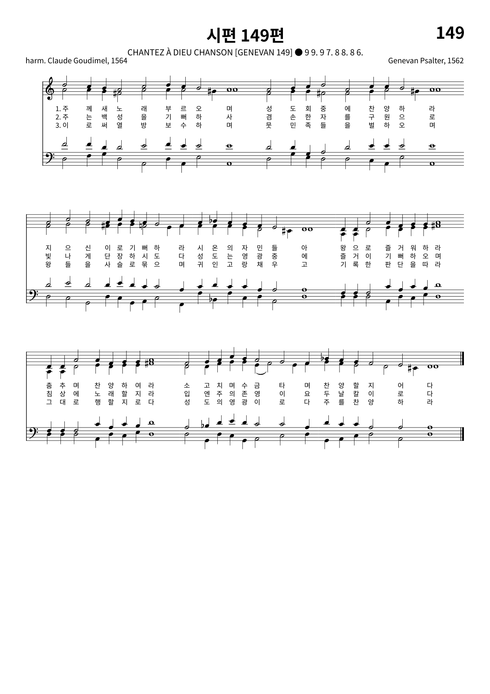

Psalm 149
CHANTEZ À DIEU CHANSON [GENEVAN 149] · 9 9. 9 7. 8 8. 8 6.
English title: The LORD Be Praised! Come and Adore Him
Tune: Genevan Psalter, 1562 · Harmony: Claude Goudimel, 1564 · Lyrics: Korean adaptation of Psalm 149 from the Korean Revised Version (AI draft adaptation · not yet theologically reviewed) · 3 stanzas
Score PDF MusicXML (for printing) MusicXML (for accompaniment, with prelude and repeats) Read Psalm 149 (Korean Revised Version)
Score
← Psalm 148 ListAccompaniment (in preparation)Psalm 150 →
Lyrics (Korean)
Stanza 1
주께 새 노래 부르오며
성도 회중에 찬양하라
지으신 이로 기뻐하라
시온의 자민들아
왕으로 즐거워하라
춤추며 찬양하여라
소고 치며 수금 타며
찬양할지어다
주께 새 노래 부르오며
성도 회중에 찬양하라
지으신 이로 기뻐하라
시온의 자민들아
왕으로 즐거워하라
춤추며 찬양하여라
소고 치며 수금 타며
찬양할지어다
Stanza 2
주는 백성을 기뻐하사
겸손한 자를 구원으로
빛나게 단장하시도다
성도는 영광 중에
즐거이 기뻐하오며
침상에 노래할지라
입엔 주의 존영이요
두 날 칼이로다
주는 백성을 기뻐하사
겸손한 자를 구원으로
빛나게 단장하시도다
성도는 영광 중에
즐거이 기뻐하오며
침상에 노래할지라
입엔 주의 존영이요
두 날 칼이로다
Stanza 3
이로써 열방 보수하며
뭇 민족들을 벌하오며
왕들을 사슬로 묶으며
귀인 고랑 채우고
기록한 판단을 따라
그대로 행할지로다
성도의 영광이로다
주를 찬양하라
이로써 열방 보수하며
뭇 민족들을 벌하오며
왕들을 사슬로 묶으며
귀인 고랑 채우고
기록한 판단을 따라
그대로 행할지로다
성도의 영광이로다
주를 찬양하라